Chapter 3 Spotcalling
MERFISH data comprises fluorescent images across different channels and imaging cycles. The desired end result are spot coordinates and spot identities.
To that end, we need to perform several subtasks: (1) establish parameters and parse necessary metadata, (2) load and process relevant images, (3) consolidate information across images and decode intensity vectors using the MERFISH codebook, (3) filter out low quality spots, and finally (4) save the output. Subtasks 2-4 are repeatedly performed as we loop through FOVs.
library(masmr)
library(ggplot2)## Warning: package 'ggplot2' was built under R version 4.3.23.1 Pre-processing
Before running your pipeline proper, there are a series of pre-processing steps that each script needs to perform. These will be explained in detail here, but the same principles apply to cell segmentation and consolidation scripts.
3.1.1 Establishing parameters
All scripts should begin by establishing parameters: e.g. location of files to read, location to output files, file formats etc.
This is accomplished in masmr using the establishParams() function, which automatically creates an environment object called params in the global environment that will be repeatedly referenced by downstream functions.
data_dir = 'C:/Users/kwaje/Downloads/JIN_SIM/20190718_WK_T2_a_B2_R8_12_d50/'
establishParams(
imageDirs = paste0(data_dir, 'S10/'),
imageFormat = '.ome.tif',
codebookFileName = list.files(paste0(data_dir, 'codebook/'), pattern='codebook', full.names = TRUE),
codebookColumnNames = paste0(rep(c(0:3), 4), '_', rep(c('cy3', 'alexa594', 'cy5', 'cy7'), each=4) ),
outDir = 'C:/Users/kwaje/Downloads/JYOUT/',
dapiDir = paste0(data_dir, 'DAPI_1/'),
pythonLocation = 'C:/Users/kwaje/AppData/Local/miniforge3/envs/scipyenv/',
fpkmFileName = paste0(data_dir, "FPKM_data/Jin_FPKMData_B.tsv"),
nProbesFileName = paste0(data_dir, "ProbesPerGene.csv"),
verbose = FALSE #It is generally a good idea to keep verbose as True, but will turn it off for this showcase
)## Assuming .ome.tif is extension for meta files...As the bare minimum, users need to establish:
imageDirs: where the MERFISH image files are located.imageFormat: what image file formats to read. Typically.ome.tifor.dax, but other formats compatible with Bioformats are acceptable too.codebookFileName: location of MERFISH codebook.codebookColumnNames: names of every bit in the MERFISH codebook. Each “bit name” should typically comprise the image index (e.g. image 1, 2, 3 etc) and channel (e.g. Cy3, Alexa-594 etc): so a bit titled0_cy3tells us that the image to be loaded is the Cy3 channel of the first image in the set (here, starting from 0). This is important because the order images are loaded in may not match up with the order of bits in the codebook.outDir: where output files should be written to.
Other parameters such as dapiDir and pythonLocation will be discussed subsequently for Cell Segmentation.
There also exist some parameters such as fpkmFileName (file containing FPKM data) and nProbesFileName (file containing number of MERFISH encoding probes per gene), which are files to be read for quality control purposes. However, these parameters are designed to be optional, and your code should run fine even if they are not specified.
The information stored in the params object can be read for further details:
ls( envir = params )## [1] "codebook_colnames" "codebook_file"
## [3] "dapi_dir" "dapi_format"
## [5] "dir_names" "fov_names"
## [7] "fpkm_file" "im_dir"
## [9] "im_format" "inferred_codebookColnames"
## [11] "meta_format" "n_probes_file"
## [13] "nbits" "out_dir"
## [15] "parent_out_dir" "python_location"
## [17] "raw_codebook" "resumeMode"
## [19] "seed" "verbose"Note the existence of the params$resumeMode object. This houses a boolean that determines if functions are skipped if there is evidence that they have been run before. As default, to save time, this is set to TRUE.
3.1.2 Getting parameters from image metadata
The next step is to obtain image metadata that accompanies most microscopy images. This is typically found in the same file as your image data (e.g. .ome.tif) but can sometimes be in a separate file (e.g. .xml that accompany .dax images). masmr will attempt to guess which meta data format is appropriate, but users can change values in params as needed.
We can check what values have been entered into params:
params$meta_format## [1] ".ome.tif"If unsatisfied, we can update as follows:
params$meta_format <- '.dax'
print(params$meta_format)## [1] ".dax"params$meta_format <- '.ome.tif'
print(params$meta_format)## [1] ".ome.tif"Having specified our meta data formats, we can then load additional meta data information with the readImageMetaData function.
readImageMetaData()## Warning in readImageMetaData(): Assuming this data has been acquired by Triton## Warning in readImageMetaData(): Updating params$fov_namesThis adds additional information to params, such as resolution information:
print( params$resolutions )## $per_pixel_microns
## [1] "0.0706" "0.0706"
##
## $xydimensions_pixels
## [1] "2960" "2960"
##
## $xydimensions_microns
## [1] "208.976" "208.976"
##
## $channel_order
## [1] "cy7" "cy5" "alexa594" "cy3"
##
## $fov_names
## [1] "MMStack_1-Pos_000_000" "MMStack_1-Pos_001_000" "MMStack_1-Pos_002_000"
## [4] "MMStack_1-Pos_003_000" "MMStack_1-Pos_004_000" "MMStack_1-Pos_005_000"
## [7] "MMStack_1-Pos_006_000" "MMStack_1-Pos_007_000" "MMStack_1-Pos_008_000"
## [10] "MMStack_1-Pos_009_000" "MMStack_1-Pos_009_001" "MMStack_1-Pos_008_001"
## [13] "MMStack_1-Pos_007_001" "MMStack_1-Pos_006_001" "MMStack_1-Pos_005_001"
## [16] "MMStack_1-Pos_004_001" "MMStack_1-Pos_003_001" "MMStack_1-Pos_002_001"
## [19] "MMStack_1-Pos_001_001" "MMStack_1-Pos_000_001" "MMStack_1-Pos_000_002"
## [22] "MMStack_1-Pos_001_002" "MMStack_1-Pos_002_002" "MMStack_1-Pos_003_002"
## [25] "MMStack_1-Pos_004_002" "MMStack_1-Pos_005_002" "MMStack_1-Pos_006_002"
## [28] "MMStack_1-Pos_007_002" "MMStack_1-Pos_008_002" "MMStack_1-Pos_009_002"
## [31] "MMStack_1-Pos_009_003" "MMStack_1-Pos_008_003" "MMStack_1-Pos_007_003"
## [34] "MMStack_1-Pos_006_003" "MMStack_1-Pos_005_003" "MMStack_1-Pos_004_003"
## [37] "MMStack_1-Pos_003_003" "MMStack_1-Pos_002_003" "MMStack_1-Pos_001_003"
## [40] "MMStack_1-Pos_000_003" "MMStack_1-Pos_000_004" "MMStack_1-Pos_001_004"
## [43] "MMStack_1-Pos_002_004" "MMStack_1-Pos_003_004" "MMStack_1-Pos_004_004"
## [46] "MMStack_1-Pos_005_004" "MMStack_1-Pos_006_004" "MMStack_1-Pos_007_004"
## [49] "MMStack_1-Pos_008_004" "MMStack_1-Pos_009_004" "MMStack_1-Pos_009_005"
## [52] "MMStack_1-Pos_008_005" "MMStack_1-Pos_007_005" "MMStack_1-Pos_006_005"
## [55] "MMStack_1-Pos_005_005" "MMStack_1-Pos_004_005" "MMStack_1-Pos_003_005"
## [58] "MMStack_1-Pos_002_005" "MMStack_1-Pos_001_005" "MMStack_1-Pos_000_005"
## [61] "MMStack_1-Pos_000_006" "MMStack_1-Pos_001_006" "MMStack_1-Pos_002_006"
## [64] "MMStack_1-Pos_003_006" "MMStack_1-Pos_004_006" "MMStack_1-Pos_005_006"
## [67] "MMStack_1-Pos_006_006" "MMStack_1-Pos_007_006" "MMStack_1-Pos_008_006"
## [70] "MMStack_1-Pos_009_006" "MMStack_1-Pos_009_007" "MMStack_1-Pos_008_007"
## [73] "MMStack_1-Pos_007_007" "MMStack_1-Pos_006_007" "MMStack_1-Pos_005_007"
## [76] "MMStack_1-Pos_004_007" "MMStack_1-Pos_003_007" "MMStack_1-Pos_002_007"
## [79] "MMStack_1-Pos_001_007" "MMStack_1-Pos_000_007" "MMStack_1-Pos_000_008"
## [82] "MMStack_1-Pos_001_008" "MMStack_1-Pos_002_008" "MMStack_1-Pos_003_008"
## [85] "MMStack_1-Pos_004_008" "MMStack_1-Pos_005_008" "MMStack_1-Pos_006_008"
## [88] "MMStack_1-Pos_007_008" "MMStack_1-Pos_008_008" "MMStack_1-Pos_009_008"
## [91] "MMStack_1-Pos_009_009" "MMStack_1-Pos_008_009" "MMStack_1-Pos_007_009"
## [94] "MMStack_1-Pos_006_009" "MMStack_1-Pos_005_009" "MMStack_1-Pos_004_009"
## [97] "MMStack_1-Pos_003_009" "MMStack_1-Pos_002_009" "MMStack_1-Pos_001_009"
## [100] "MMStack_1-Pos_000_009"
##
## $zslices
## [1] "1"It also creates a dataframe that stores file information for every bit. This will be referenced heavily by downstream functions.
knitr::kable( head( params$global_coords ), format = 'html', booktabs = TRUE )| x_microns | y_microns | z_microns | image_file | fov | bit_name_full | bit_name_alias | bit_name |
|---|---|---|---|---|---|---|---|
| -2645.753 | 3421.847 | 5673.78 | C:/Users/kwaje/Downloads/JIN_SIM/20190718_WK_T2_a_B2_R8_12_d50/S10/hyb00_1/hyb00_1_MMStack_1-Pos_000_000.ome.tif | MMStack_1-Pos_000_000 | hyb00_1_cy7 | 0_cy7 | 0_cy7 |
| -2645.753 | 3421.847 | 5673.78 | C:/Users/kwaje/Downloads/JIN_SIM/20190718_WK_T2_a_B2_R8_12_d50/S10/hyb00_1/hyb00_1_MMStack_1-Pos_000_000.ome.tif | MMStack_1-Pos_000_000 | hyb00_1_cy5 | 0_cy5 | 0_cy5 |
| -2645.753 | 3421.847 | 5673.78 | C:/Users/kwaje/Downloads/JIN_SIM/20190718_WK_T2_a_B2_R8_12_d50/S10/hyb00_1/hyb00_1_MMStack_1-Pos_000_000.ome.tif | MMStack_1-Pos_000_000 | hyb00_1_alexa594 | 0_alexa594 | 0_alexa594 |
| -2645.753 | 3421.847 | 5673.78 | C:/Users/kwaje/Downloads/JIN_SIM/20190718_WK_T2_a_B2_R8_12_d50/S10/hyb00_1/hyb00_1_MMStack_1-Pos_000_000.ome.tif | MMStack_1-Pos_000_000 | hyb00_1_cy3 | 0_cy3 | 0_cy3 |
| -2645.753 | 3421.847 | 5673.78 | C:/Users/kwaje/Downloads/JIN_SIM/20190718_WK_T2_a_B2_R8_12_d50/S10/hyb01_1/hyb01_1_MMStack_1-Pos_000_000.ome.tif | MMStack_1-Pos_000_000 | hyb01_1_cy7 | 1_cy7 | 1_cy7 |
| -2645.753 | 3421.847 | 5673.78 | C:/Users/kwaje/Downloads/JIN_SIM/20190718_WK_T2_a_B2_R8_12_d50/S10/hyb01_1/hyb01_1_MMStack_1-Pos_000_000.ome.tif | MMStack_1-Pos_000_000 | hyb01_1_cy5 | 1_cy5 | 1_cy5 |
Note that as default, the above information is saved to a sub-directory in your chosen output folder.
print( params$parent_out_dir )## [1] "C:/Users/kwaje/Downloads/JYOUT/"print( params$out_dir )## [1] "C:/Users/kwaje/Downloads/JYOUT//IM/"3.1.3 Preparing the codebook
A codebook is a table of indicating the sequence of ON (1) and OFF (0) bits for each gene (example below). masmr expects this to be a table (e.g. .csv or .txt) that contains N rows for N genes/blanks, and M+1 columns for M bits (e.g. below is a 16-bit setup) and 1 gene column.
knitr::kable( head(data.table::fread( params$codebook_file, data.table = F )), format = 'html', booktabs = TRUE )| V1 | V2 | V3 | V4 | V5 | V6 | V7 | V8 | V9 | V10 | V11 | V12 | V13 | V14 | V15 | V16 | V17 |
|---|---|---|---|---|---|---|---|---|---|---|---|---|---|---|---|---|
| 0 | 0 | 1 | 1 | 0 | 1 | 0 | 0 | 0 | 1 | 0 | 0 | 0 | 0 | 0 | 0 | Blank-1 |
| 0 | 0 | 1 | 0 | 0 | 1 | 0 | 0 | 0 | 0 | 0 | 0 | 1 | 1 | 0 | 0 | Blank-2 |
| 0 | 0 | 1 | 0 | 0 | 0 | 1 | 0 | 0 | 0 | 1 | 0 | 1 | 0 | 0 | 0 | Blank-3 |
| 0 | 1 | 0 | 1 | 1 | 0 | 0 | 0 | 0 | 0 | 0 | 0 | 0 | 0 | 1 | 0 | Blank-4 |
| 0 | 0 | 0 | 1 | 0 | 0 | 0 | 0 | 0 | 1 | 0 | 0 | 1 | 1 | 0 | 0 | Blank-5 |
| 0 | 1 | 1 | 0 | 1 | 0 | 0 | 0 | 1 | 0 | 0 | 0 | 0 | 0 | 0 | 0 | ASCL1 |
Unique to spotcalling, users must “prepare” their codebooks. This typically involves ensuring that the order of bits matches the order of image loading that masmr performs. Additionally, masmr also provides the option to add more “blanks” beyond those already specified by the user.
prepareCodebook( exhaustiveBlanks = T )The new ordered codebook is stored in the output directory, and users can refer to it as follows:
knitr::kable( head( params$ordered_codebook ), format = 'html', booktabs = TRUE )| 0_cy7 | 0_cy5 | 0_alexa594 | 0_cy3 | 1_cy7 | 1_cy5 | 1_alexa594 | 1_cy3 | 2_cy7 | 2_cy5 | 2_alexa594 | 2_cy3 | 3_cy7 | 3_cy5 | 3_alexa594 | 3_cy3 | |
|---|---|---|---|---|---|---|---|---|---|---|---|---|---|---|---|---|
| Blank-1 | 0 | 0 | 0 | 0 | 0 | 1 | 1 | 0 | 0 | 0 | 0 | 1 | 0 | 0 | 0 | 1 |
| Blank-2 | 1 | 0 | 0 | 0 | 1 | 0 | 1 | 0 | 0 | 0 | 0 | 1 | 0 | 0 | 0 | 0 |
| Blank-3 | 1 | 0 | 0 | 0 | 0 | 0 | 0 | 0 | 0 | 1 | 1 | 1 | 0 | 0 | 0 | 0 |
| Blank-4 | 0 | 0 | 1 | 0 | 0 | 0 | 0 | 1 | 1 | 0 | 0 | 0 | 0 | 0 | 0 | 1 |
| Blank-5 | 1 | 0 | 0 | 0 | 1 | 1 | 0 | 0 | 0 | 0 | 0 | 0 | 0 | 0 | 0 | 1 |
| ASCL1 | 0 | 1 | 1 | 0 | 0 | 0 | 0 | 1 | 0 | 0 | 0 | 1 | 0 | 0 | 0 | 0 |
3.1.4 House-keeping
Having performed all the necessary pre-processing, it may be useful for users to take a snapshot of the current environment. Unnecessary data can then be cleared from memory in subsequent steps to return the global environment to that snapshot. This is accomplished using our establishCleanSlate and cleanUp functions.
An example use-case is provided below:
establishCleanSlate()## [1] "data_dir" "full_res" "n_channels" "params"print(cleanSlate)## [1] "data_dir" "full_res" "n_channels" "params" "cleanSlate"x = '12345'
exists('x')## [1] TRUEcleanUp()
exists('x')## [1] FALSE3.2 Preparing to loop through images
Having done the necessary pre-processing, users may now begin processing each FOV. This is done by looping through params$fov_names. It is also recommended that the current FOV be saved in params$current_fov.
head(params$fov_names)## [1] "MMStack_1-Pos_000_000" "MMStack_1-Pos_001_000" "MMStack_1-Pos_002_000"
## [4] "MMStack_1-Pos_003_000" "MMStack_1-Pos_004_000" "MMStack_1-Pos_005_000"params$current_fov <- params$fov_names[38]
print(params$current_fov)## [1] "MMStack_1-Pos_002_003"Users may also wish to check if they are ready to loop with our checkReadyLoop function, but this is entirely optional.
checkReadyLoop()## Warning in checkReadyLoop(): params$brightness_min not found:
## If desired, ensure getAnchorParams() has been run## [1] FALSE3.2.1 Image reading
To read images, we rely on the RBioformats package, which is able to read most image file formats. One exception is .dax files – however, these are binary files and can be read by base R. To account for these different types of images, we can use the readImage function in masmr.
Below, I provide an example of a .dax file:
file <- 'C:/Users/kwaje/Downloads/LIU_CONNECT_CORTICALORGANOID_240902/DATA/20240902/cont/Alexa594_0_10.dax'
im <- readImage(
file,
imageDimensions = c(1,2048,2048,1),
nchannels = 1, #The image only has 1 channel
nzs = 1
)## Warning in readImage(file, imageDimensions = c(1, 2048, 2048, 1), nchannels =
## 1, : Unable to read with RBioFormatsprint(length(im))## [1] 1imsub <- im[[1]]
plot(imager::as.cimg(imsub), main = paste0('Image dimensions: ', paste(dim(imsub), collapse = ' x ') ))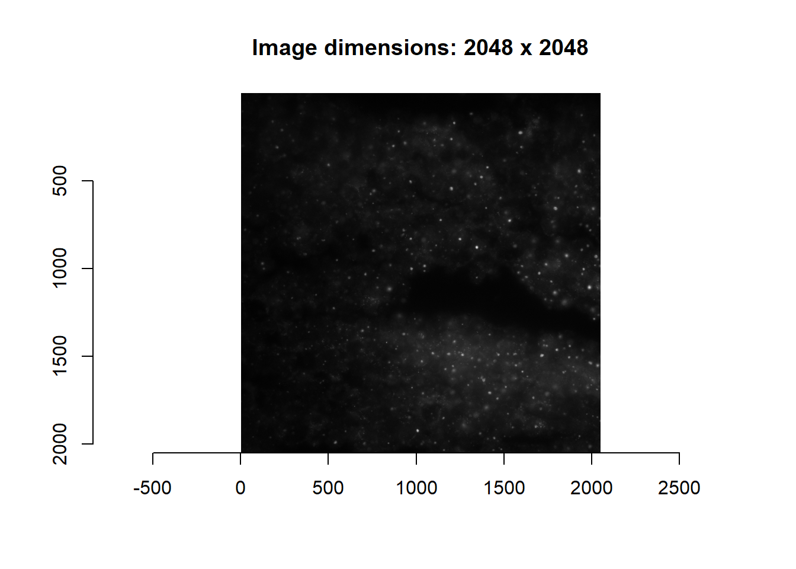
From above, note that the default is assumed to be: Number of Channels, Number of rows, Number of Columns, Number of Z slices. In the above case, since and are both 1, users could technically specify image dimensions using width an height alone. However, it is generally good practice to keep to a consistent format.
For .ome.tif files, the same function can be used. However, we need to specify an additional series parameter: otherwise, all FOVs will be loaded. For more details, we recommend reading the documentation for RBioformats::read.image. Below, I provide an example of reading the second channel for the current FOV (specified above).
file <- unique( params$global_coords[params$global_coords$fov==params$fov_names, 'image_file'] )[1]
series <- which( params$fov_names == params$current_fov )
im <- readImage(
file,
nchannels = 4, # The image has 4 channels total
nzs = 1,
series = series )
print( length(im) ) #4 channels## [1] 4imsub <- im[[2]]
plot(imager::as.cimg( imsub ), main = paste0('Image dimensions: ', paste(dim(imsub), collapse = ' x ') ) )## Warning in as.cimg.array(imsub): Assuming third dimension corresponds to
## time/depth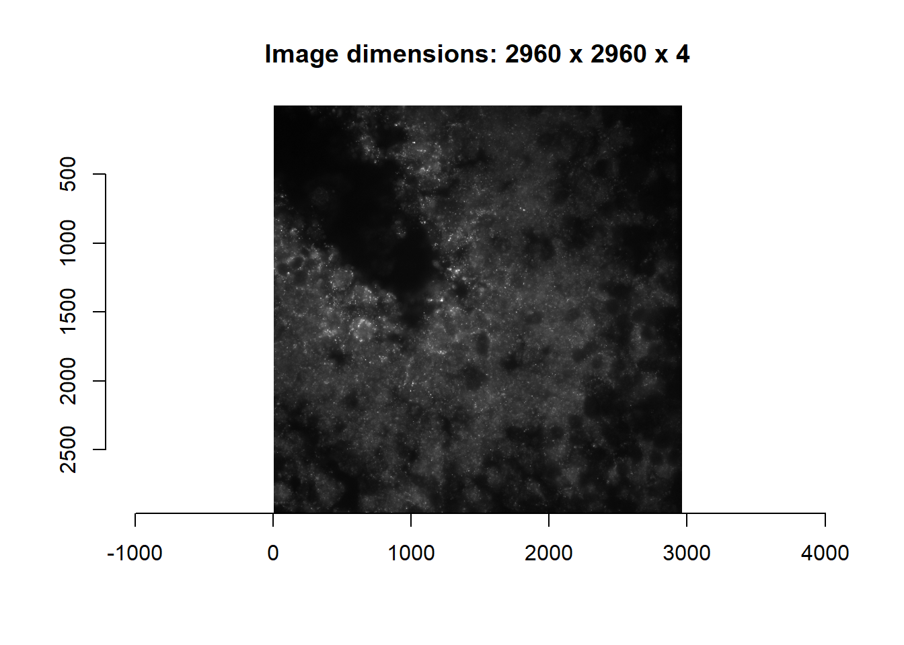
Note that readImage as written above reads all four channels into memory, and we subset the second channel using im[,,2]. An alternative is to just load the second channel directly using the subset parameter in RBioformats::read.image, or the channelIndex parameter in readImage. This is useful for memory management.
im <- readImage(
file,
nchannels = 4,
nzs = 1,
series = series,
channelIndex = 2 )
print(length(im)) #Only 1 channel loaded## [1] 1imsub <- im[[1]]
plot(imager::as.cimg(imsub), main = paste0('Image dimensions: ', paste(dim(imsub), collapse = ' x ') ) )## Warning in as.cimg.array(imsub): Assuming third dimension corresponds to
## time/depth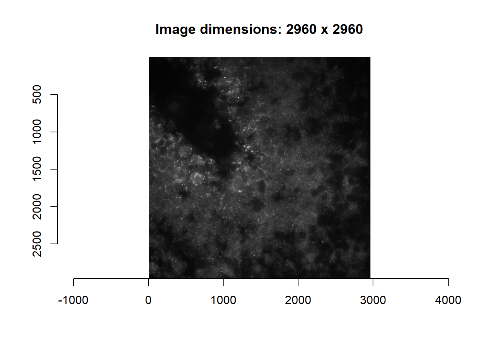
For MERFISH, we typically have to handle multiple images at once. We have thus created an additional image reading function called readImageList that loads all images for a given FOV, by cross-referencing params$global_coords to find all relevant files. And because readImageList does this cross-referencing, parameters such as nchannels, nzs etc do not have to be specified.
imList <- readImageList( params$current_fov )
names(imList)## [1] "0_cy7" "0_cy5" "0_alexa594" "0_cy3" "1_cy7"
## [6] "1_cy5" "1_alexa594" "1_cy3" "2_cy7" "2_cy5"
## [11] "2_alexa594" "2_cy3" "3_cy7" "3_cy5" "3_alexa594"
## [16] "3_cy3"3.2.2 Establishing global image parameters
As a first step, it is recommended that we determine the dynamic range of intensity values: i.e. the brightness value for below which (i.e. minimum brightness / floor) and above which (i.e. maximum brightness / ceiling) we can safely ignore gradation. A sensible minimum brightness would be intensities for background pixels where no tissue is imaged. For maximum brightness, we want a cap where all super-threshold intensities can effectively be considered ‘ON’. Ideally, these limits should be relatively consistent across FOVs.
We have created a function getAnchorParams that loads multiple FOVs and attempts to get global image parameters. As default, brightness_max and brightness_min are returned. For details, see the documentation for getAnchorParams.
getAnchorParams( nSamples = 6 )These values are appended to params:
params$brightness_min## [1] 0.02665484 0.07892208 0.02916114 0.04901184 0.03023053 0.06347031
## [7] 0.02397402 0.04414353 0.02355671 0.07126881 0.02574727 0.04234602
## [13] 0.02069601 0.06184499 0.02228692 0.04452783Anchor FOVs are those used to derive global image parameters. These can be user-specified, or automatically determined with getAnchorParams. If automatic, nSamples number of FOVs are randomly selected. These can be visualised (in red) after running getAnchorParams:
print(params$anchors)## [1] "MMStack_1-Pos_001_003" "MMStack_1-Pos_005_000" "MMStack_1-Pos_007_009"
## [4] "MMStack_1-Pos_008_009" "MMStack_1-Pos_009_001" "MMStack_1-Pos_002_003"print(params$anchors_plot)
Random sampling should work for most cases. For more regular FOVs, users may instead opt for grid-based selection of FOVs: evenly spaced FOVs internal to the outermost ring of FOVs are selected. [Since we are re-obtaining anchor metrics, set freshAnchors to true.]
getAnchorParams( anchorMode = 'grid', returnTroubleShootPlots = T, freshAnchors = T )And so this returns a different subset of anchors.
print(params$anchors)## [1] "MMStack_1-Pos_001_001" "MMStack_1-Pos_001_003" "MMStack_1-Pos_001_005"
## [4] "MMStack_1-Pos_001_007" "MMStack_1-Pos_003_002" "MMStack_1-Pos_003_004"
## [7] "MMStack_1-Pos_003_006" "MMStack_1-Pos_003_008" "MMStack_1-Pos_005_001"
## [10] "MMStack_1-Pos_005_003" "MMStack_1-Pos_005_005" "MMStack_1-Pos_005_007"
## [13] "MMStack_1-Pos_007_002" "MMStack_1-Pos_007_004" "MMStack_1-Pos_007_006"
## [16] "MMStack_1-Pos_007_008"print(params$anchors_plot)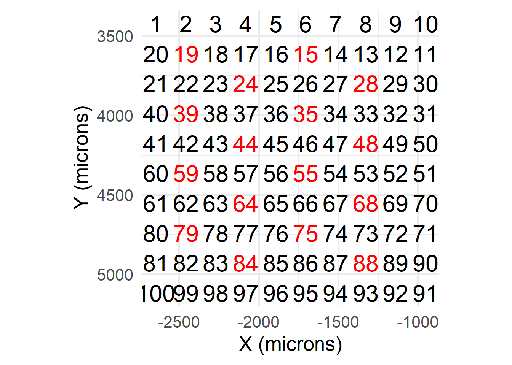
Users should ensure that sufficient anchors are chosen for representative brightness caps and floors to be obtained. Additionally, different brightness caps / floors may be required for different samples, depending on how consistent imaging parameters were across samples. Inconsistent imaging parameters may be expected if samples were e.g. imaged on different days.
Additionally, should users wish to obtain other global parameters, this can be achieved by altering the imageFunctions and summaryFunctions fields in getAnchorParams.
For instance, say we wish to also obtain the mean brightness per image (brightness_mean). We first write a function to perform this (custom_getMeanBrightness), which will then be looped over every anchor FOV. We include this function among the named list users_imageFunctions, which we then input to imageFunctions. This returns a vector of mean brightness values for every anchor image, which are then summarised by the corresponding function in summaryFunctions (as default, we recommend conservativeMean – explained later – or some summary function robust to outliers).
custom_getMeanBrightness <- function( im, ... ){
meanBrightness <- mean( im )
return( meanBrightness )
}
users_imageFunctions = list(
'brightness_min' = imsBrightnessMin_MIP, #MIP for Z-stacks
'brightness_max' = imsBrightnessMax_MIP,
'brightness_mean' = custom_getMeanBrightness
)
users_summaryFunctions = list(
'brightness_min' = conservativeMean,
'brightness_max' = conservativeMean,
'brightness_mean' = conservativeMean
)
getAnchorParams(
imageFunctions = users_imageFunctions,
summaryFunctions = users_summaryFunctions,
anchorMode = 'grid'
)On conservativeMean: this is a function that takes the mean within a specific range, delimited by a certain number of standard deviations (default = 0.9). This should return mean values less skewed by outliers. An alternative could be median, or some user-defined function.
set.seed(12345)
test <- rgamma( 1E4, 2, 1 )
hist( test, breaks=100, main='Histogram of values with mean (red) and conservativeMean (blue)', xlab='Gamma distribution' );
abline(v=mean(test), col='red');
abline(v=conservativeMean(test, nSDs = 0.9), col='blue')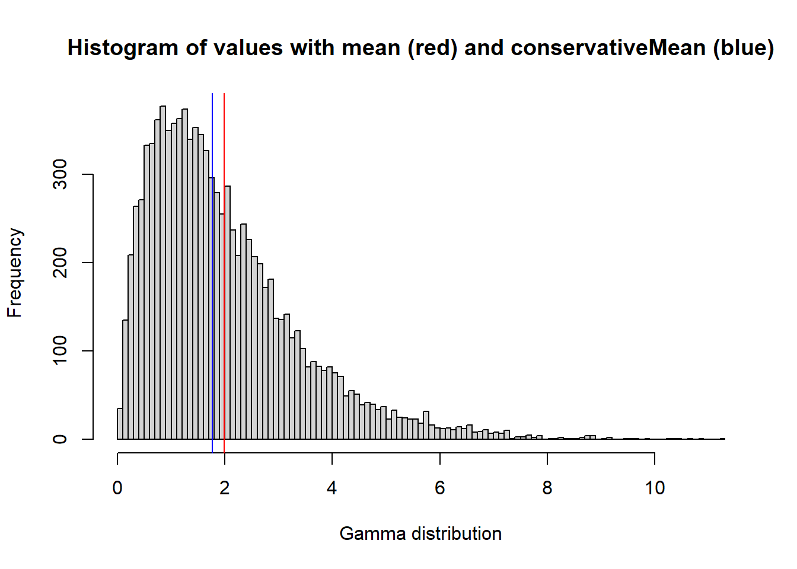
To evaluate the suitability of chosen thresholds, users can refer to the troubleshootPlots environment returned when returnTroubleShootPlots is true.
metric = 'brightness_min'
bit_number = 1
print( troubleshootPlots[[ metric ]][[ bit_number ]] )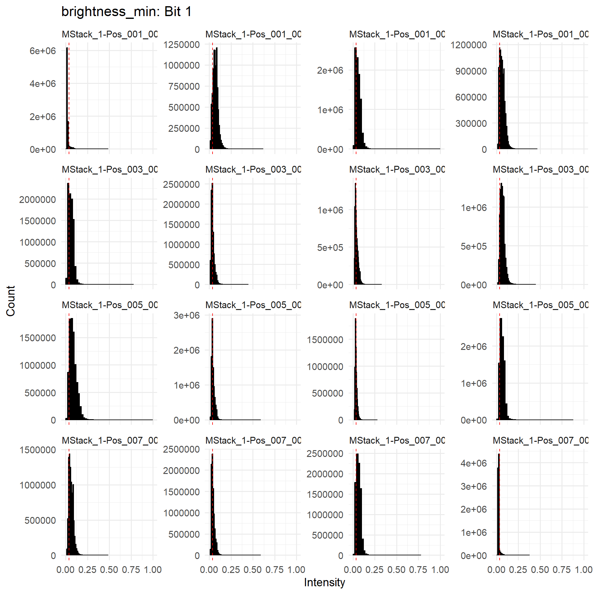
For each metric, we also report the observed thresholds as a quantile of each anchor image’s pixel intensity. These can be found in the ANCHOR_QUANTILEQC.csv file. We expect brightness floors to have a low quantile across FOVs (unless there are some empty FOVs included), and brightness ceilings to have high quantiles.
head(read.csv( paste0(params$out_dir, 'ANCHOR_QUANTILEQC.csv')))## metric bit MMStack_1.Pos_001_001 MMStack_1.Pos_001_003
## 1 brightness_min 1 0.9187895 0.1231919
## 2 brightness_max 1 0.9999800 0.9998100
## 3 brightness_min 2 0.9205798 0.1248851
## 4 brightness_max 2 0.9995589 0.9855621
## 5 brightness_min 3 0.9230520 0.1136280
## 6 brightness_max 3 1.0000000 1.0000000
## MMStack_1.Pos_001_005 MMStack_1.Pos_001_007 MMStack_1.Pos_003_002
## 1 0.2534933 0.2073274 0.2458487
## 2 0.9997967 0.9998654 0.9998590
## 3 0.2626584 0.2286615 0.2431207
## 4 0.9769110 0.9885266 0.9930865
## 5 0.2583598 0.1959322 0.2110254
## 6 0.9999945 1.0000000 0.9999952
## MMStack_1.Pos_003_004 MMStack_1.Pos_003_006 MMStack_1.Pos_003_008
## 1 0.5588561 0.5077519 0.10864865
## 2 0.9999914 0.9999982 0.99961480
## 3 0.5643622 0.5056256 0.13454552
## 4 0.9991272 0.9994388 0.99336617
## 5 0.4886617 0.4099523 0.09494156
## 6 1.0000000 1.0000000 0.99999726
## MMStack_1.Pos_005_001 MMStack_1.Pos_005_003 MMStack_1.Pos_005_005
## 1 0.08566187 0.4722320 0.6327399
## 2 0.99916499 0.9999821 1.0000000
## 3 0.08949598 0.4169337 0.4555937
## 4 0.87119601 0.9991592 0.9993902
## 5 0.08018513 0.3478341 0.3117073
## 6 0.99997740 1.0000000 1.0000000
## MMStack_1.Pos_005_007 MMStack_1.Pos_007_002 MMStack_1.Pos_007_004
## 1 0.1366108 0.1784223 0.4619367
## 2 0.9998951 0.9999053 0.9999768
## 3 0.1668553 0.1792000 0.5029208
## 4 0.9972692 0.9932534 0.9988799
## 5 0.1181132 0.1452180 0.4117146
## 6 0.9999995 1.0000000 1.0000000
## MMStack_1.Pos_007_006 MMStack_1.Pos_007_008
## 1 0.1657847 0.9504158
## 2 0.9998435 0.9999966
## 3 0.1761314 0.9576270
## 4 0.9904303 0.9999356
## 5 0.1251103 0.9552260
## 6 0.9999977 1.00000003.3 Maximum intensity projection
For Z stacks, we default to maximum intensity projection (MIP) to collapse a 3D array into a 2D matrix. [If there are no other slices, then the 2D matrix is returned unchanged.]
toy_example <- array( c(
matrix(0:11 / 12, nrow = 3, ncol = 4, byrow = T),
matrix(11:0 / 12, nrow = 3, ncol = 4, byrow = T)
), dim = c(3, 4, 2)
)
mip <- maxIntensityProject(toy_example)
par(mfrow=c(1,3))
plot( imager::as.cimg(toy_example[,,1]), main = 'Z slice 1', interpolate = F, rescale = F)
plot( imager::as.cimg(toy_example[,,2]), main = 'Z slice 2', interpolate = F, rescale = F)
plot( imager::as.cimg(mip), main = 'MIP', interpolate = F, rescale = F)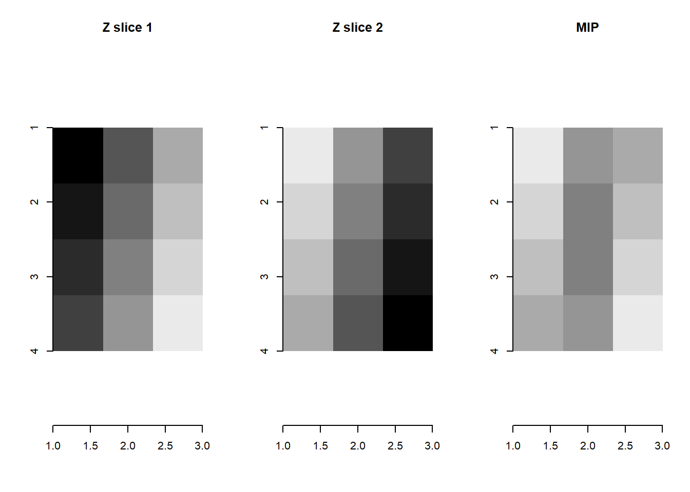
par(mfrow=c(1,1))Also note that similarly performs MIP (where possible) prior to finding minimum / maximum brightnesses.
masmr::imsBrightnessMin_MIP## function (im, zDim = 3, ...)
## {
## if (length(dim(im)) != 2) {
## im <- suppressWarnings(maxIntensityProject(im, zDim = zDim))
## }
## result <- imsBrightnessMin(im, ...)
## return(result)
## }
## <bytecode: 0x00000223e915ce88>
## <environment: namespace:masmr>Users wishing to process Z slices individually are encouraged refer to Troubleshooting (Chapter 8) for details.
3.4 Looping through images
After establishing global parameters (e.g. brightness floors and ceilings), we are now ready to loop through our image data. It is strongly recommended that the user keeps track of the current FOV being processed in params$current_fov as follows:
for( fovName in params$fov_names ){
## Report current FOV / iteration
cat( paste0('\n', fovName, ': ',
which(params$fov_names==fovName), ' of ',
length(params$fov_names), '...' ))
## Check if file has been created
if( params$resumeMode ){
checkFile <- file.exists( paste0(params$out_dir, 'SPOTCALL_', fovName, '.csv.gz') )
if(checkFile){
cat('FOV has been processed...Skipping...')
next
}
}
## Save the current_fov
params$current_fov <- fovName
## Load image
imList <- readImageList( params$current_fov )
## If needed, MIP for each channel
imList <- maxIntensityProject( imList )
## Image processing functions etc...
}3.4.1 Default image processing
Designing custom image processing functions is a topic worthy of its own chapter (Chapter 4). For now, we will use the default processing provided in masmr:
getImageMetrics( imList )## The processed images are stored in a new imMetrics environment, and can be visualised as follows:
par(mfrow=c(2,3))
for( imMetricName in ls(imMetrics) ){
imsub <- imMetrics[[imMetricName]][[1]]
plot(imager::as.cimg(imsub[1000:1500, 1000:1500, 1] ), main = imMetricName)
}
par(mfrow=c(1,1))
3.4.2 Image registration
Images of the same FOV are rarely perfect overlaps of each other due to imprecise microscope movements. Additionally, optical distortions (e.g. chromatic aberration), may also cause images from different channels to become unaligned. It is thus highly recommended to align images before any downstream decoding (i.e. image registration).
It is up to the user to decide what image processing to perform to obtain images ideal for registration. We recommend a combination of low-pass and high-pass features: below, we combine images from COARSE and DECODE in imMetrics (i.e. band pass filtering).
forReg <- list()
for(i in 1:length(imList)){
forReg[[i]] <- imNormalise( imMetrics$COARSE[[i]] + imMetrics$DECODE[[i]] )
}
names(forReg) <- names(imList) #Always keep the names from imList
norm <- forReg[[1]]
par(mfrow=c(1,2))
plot( imager::as.cimg(norm), main = 'Band pass' )## Warning in as.cimg.array(norm): Assuming third dimension corresponds to
## time/depthplot( imager::as.cimg(norm[1000:1500, 1000:1500, 1]), main = 'Band pass (Zoom in)' )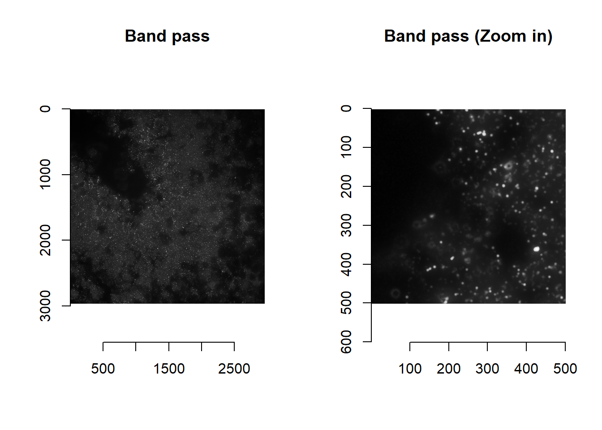
par(mfrow=c(1,1))Registration is accomplished with our registerImages function. The function works by maximising cross-correlation between two images (in Fourier transformed space). [Strictly, cross-correlation is first passed through a Gaussian filter centred around the origin, to upweight small shifts. Gaussian filter parameters can be tweaked using relevant parameters – see documentation for registerImages. Additionally, when an image stack is detected, maximum intensity projection is performed before registration.]
registerImages(forReg, returnTroubleShootPlots = T)## Warning in maxIntensityProject(imsub): 2D matrix provided...Skipping MIP...This function adds the necessary coordinate offsets to the params environment object. Shift vectors (and coordinates in general) are typically handled as complex numbers in masmr; with the real component reflecting the x-coordinate and the imaginary, y.
print( params$shifts )## 0_cy7 0_cy5 0_alexa594 0_cy3 1_cy7 1_cy5 1_alexa594
## 0+0i 0+0i 0+0i 0-1i -5+3i -5+3i -5+2i
## 1_cy3 2_cy7 2_cy5 2_alexa594 2_cy3 3_cy7 3_cy5
## -5+2i -12+5i -12+5i -11+4i -11+3i -14+2i -14+2i
## 3_alexa594 3_cy3
## -14+3i -14+2iThese offsets are added to existing coordinates so as to better align images. To evaluate the registration, users can set returnTroubleShootPlots in registerImages to true (which returns a troubleshootPlots object), or use register_troubleshootPlots directly (see documentation).
p <- troubleshootPlots[['REGISTRATION_EVAL']][[1]][['PRE_REGISTER']]
print(
p + ggtitle('Before registration')
)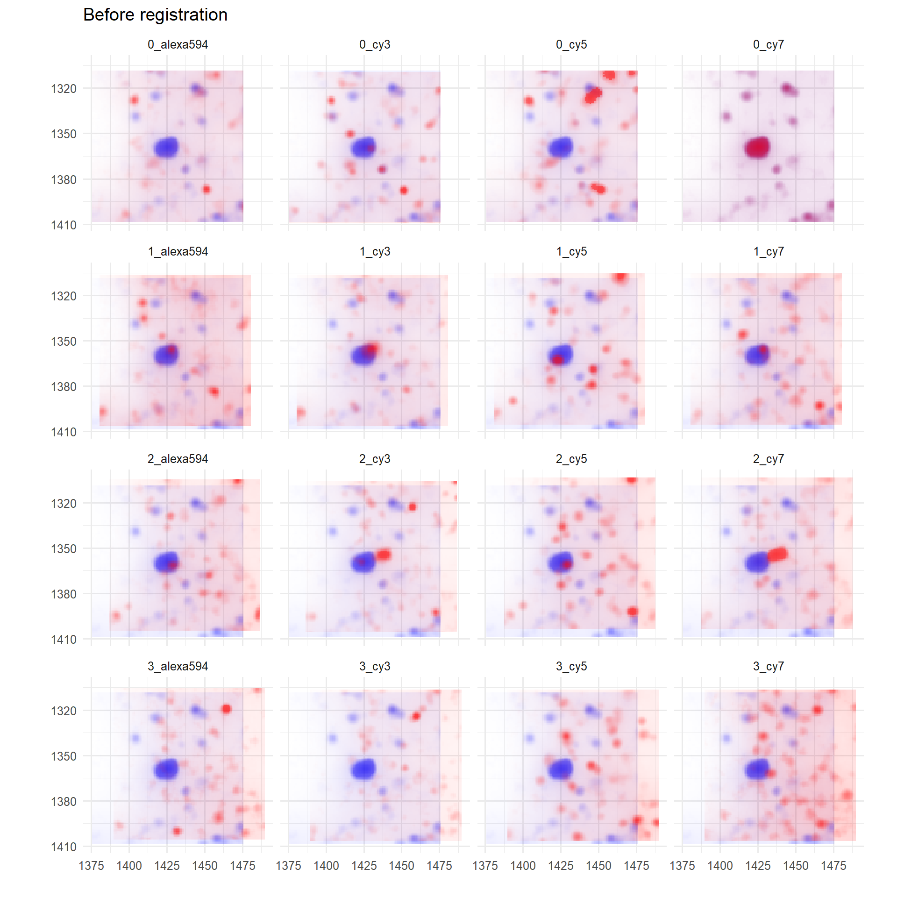
The default is to plot registrations with respect to the reference FOV (red). A window centred on the brightest pixel in the reference FOV is selected as default.
p <- troubleshootPlots[['REGISTRATION_EVAL']][[1]][['POST_REGISTER']]
print(
p + ggtitle('After registration')
)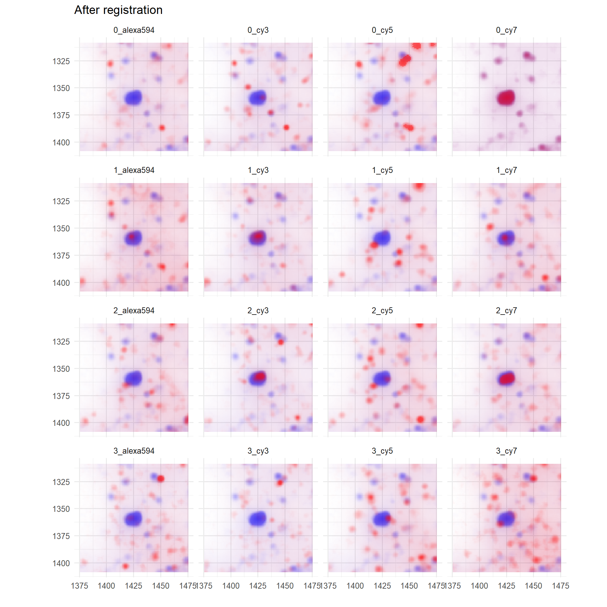
Additionally, the registerImages function also saves the reference bit image as a REGIM_{ FOV Name }.png file as part of its default behaviour. This can be called on for subsequent stitching.
file.exists( paste0(params$out_dir, 'REGIM_', params$current_fov, '.png') )## [1] TRUE3.5 Working with pixel-wise metrics
Having aligned and processed our images, the next steps are to compile our images into a manageable data format, perform decoding, and successively filter out low quality pixels.
3.5.1 Moving from image lists to a dataframe
The first step is to convert our images into a dataframe for easier use. Hereafter, decoding and filtering will be performed on this dataframe. This is accomplished with consolidateImageMetrics. Additionally, as the previous image lists are no longer needed, it is recommended users clean their environment with cleanUp.
If troubleshooting, users may wish to keep the imMetrics environment for the time being. However, do note that this tends to be a big object and may stretch memory requirements. [One solution, shown below, is to just keep a subset of the objects in imMetrics.]
spotcalldf <- consolidateImageMetrics()
print( paste0('Size of entire imMetrics: ', sum(sapply(ls(imMetrics), function(x) as.numeric(object.size(imMetrics[[x]])))) * 1E-9, ' Gb') )## [1] "Size of entire imMetrics: 5.04670648 Gb"for( ix in ls(imMetrics) ){
if( ix %in% c('DECODE') ){ next }
remove( list=ix, envir=imMetrics )
}
print( paste0('Size of imMetrics after filtering: ', sum(sapply(ls(imMetrics), function(x) as.numeric(object.size(imMetrics[[x]])))) * 1E-9, ' Gb') )## [1] "Size of imMetrics after filtering: 1.121489776 Gb"cleanUp( c(
'spotcalldf', #Necessary: must be specified, otherwise the dataframe will be deleted
'imMetrics', #Optional: keep if want to make use of images in filterDF() later
cleanSlate) #Other things to keep
)The result is a dataframe with a unified coordinate system, in which pixels are rows and image metrics are columns.
knitr::kable( head( spotcalldf ), format = 'html', booktabs = TRUE )| WX | WY | WZ | IDX | COARSE_01 | DECODE_01 | MASK_01 | NORM_01 | ORIG_01 | COARSE_02 | DECODE_02 | MASK_02 | NORM_02 | ORIG_02 | COARSE_03 | DECODE_03 | MASK_03 | NORM_03 | ORIG_03 | COARSE_04 | DECODE_04 | MASK_04 | NORM_04 | ORIG_04 | COARSE_05 | DECODE_05 | MASK_05 | NORM_05 | ORIG_05 | COARSE_06 | DECODE_06 | MASK_06 | NORM_06 | ORIG_06 | COARSE_07 | DECODE_07 | MASK_07 | NORM_07 | ORIG_07 | COARSE_08 | DECODE_08 | MASK_08 | NORM_08 | ORIG_08 | COARSE_09 | DECODE_09 | MASK_09 | NORM_09 | ORIG_09 | COARSE_10 | DECODE_10 | MASK_10 | NORM_10 | ORIG_10 | COARSE_11 | DECODE_11 | MASK_11 | NORM_11 | ORIG_11 | COARSE_12 | DECODE_12 | MASK_12 | NORM_12 | ORIG_12 | COARSE_13 | DECODE_13 | MASK_13 | NORM_13 | ORIG_13 | COARSE_14 | DECODE_14 | MASK_14 | NORM_14 | ORIG_14 | COARSE_15 | DECODE_15 | MASK_15 | NORM_15 | ORIG_15 | COARSE_16 | DECODE_16 | MASK_16 | NORM_16 | ORIG_16 | |
|---|---|---|---|---|---|---|---|---|---|---|---|---|---|---|---|---|---|---|---|---|---|---|---|---|---|---|---|---|---|---|---|---|---|---|---|---|---|---|---|---|---|---|---|---|---|---|---|---|---|---|---|---|---|---|---|---|---|---|---|---|---|---|---|---|---|---|---|---|---|---|---|---|---|---|---|---|---|---|---|---|---|---|---|---|
| 15055 | 255 | 6 | 1 | 14985 | 0.1685885 | 0.0666336 | FALSE | 0.0318499 | 0.0431527 | 0.1959525 | 0.0182777 | FALSE | 0.0874075 | 0.1050684 | 0.2910819 | 0.1395470 | TRUE | 0.0616752 | 0.1104383 | 0.1467471 | 0.0036333 | FALSE | 0 | 0.0532875 | 0.0949858 | 0.0023963 | FALSE | 0 | 0.0242018 | 0.1435644 | 0.0209040 | FALSE | 0.0195158 | 0.0593125 | 0.1903854 | 0.0108405 | FALSE | 0.0055703 | 0.0601619 | 0.0732994 | 0.0026951 | FALSE | 0 | 0.0213105 | 0.1354508 | 0.0018844 | FALSE | 0 | 0.0410899 | 0.1167777 | 0.0052897 | FALSE | 0 | 0.0486866 | 0.2663939 | 0.0435117 | FALSE | 0.0160442 | 0.1010937 | 0.1288667 | 0.0019179 | FALSE | 0 | 0.0423075 | 0.1124755 | 0.0024016 | FALSE | 0 | 0.0433106 | 0.0792933 | 0.0028786 | FALSE | 0 | 0.0405763 | 0.1350443 | 0.0000000 | FALSE | 0 | 0.0568347 | 0.0570399 | 0.0021209 | FALSE | 0 | 0.0223294 |
| 15056 | 256 | 6 | 1 | 14986 | 0.1753839 | 0.0860337 | FALSE | 0.0431405 | 0.0468669 | 0.2066871 | 0.0489090 | FALSE | 0.0966803 | 0.1079719 | 0.2955125 | 0.1514781 | TRUE | 0.0599694 | 0.1090731 | 0.1438671 | 0.0036322 | FALSE | 0 | 0.0511141 | 0.0923445 | 0.0023963 | FALSE | 0 | 0.0241780 | 0.1465902 | 0.0264190 | FALSE | 0.0257662 | 0.0613144 | 0.1964823 | 0.0234909 | FALSE | 0.0134243 | 0.0657939 | 0.0741845 | 0.0026951 | FALSE | 0 | 0.0200000 | 0.1455799 | 0.0018838 | FALSE | 0 | 0.0534705 | 0.1163260 | 0.0052897 | FALSE | 0 | 0.0529889 | 0.2757924 | 0.0654732 | FALSE | 0.0232150 | 0.1101432 | 0.1315909 | 0.0017231 | FALSE | 0 | 0.0464064 | 0.1207218 | 0.0024016 | FALSE | 0 | 0.0447938 | 0.0790790 | 0.0028778 | FALSE | 0 | 0.0397129 | 0.1441830 | 0.0000000 | FALSE | 0 | 0.0799452 | 0.0581769 | 0.0021209 | FALSE | 0 | 0.0198046 |
| 15057 | 257 | 6 | 1 | 14987 | 0.1767175 | 0.0890733 | FALSE | 0.0404089 | 0.0459683 | 0.2154453 | 0.0750645 | FALSE | 0.1129332 | 0.1130610 | 0.2975720 | 0.1588251 | TRUE | 0.0608004 | 0.1097382 | 0.1366940 | 0.0036309 | FALSE | 0 | 0.0454851 | 0.0879305 | 0.0023963 | FALSE | 0 | 0.0175016 | 0.1466302 | 0.0225324 | FALSE | 0.0132059 | 0.0572916 | 0.1976275 | 0.0270122 | FALSE | 0.0100954 | 0.0634068 | 0.0740865 | 0.0026951 | FALSE | 0 | 0.0204992 | 0.1562726 | 0.0018829 | FALSE | 0 | 0.0593196 | 0.1147730 | 0.0052897 | FALSE | 0 | 0.0534790 | 0.2846638 | 0.0895756 | FALSE | 0.0281234 | 0.1163376 | 0.1298415 | 0.0014963 | FALSE | 0 | 0.0440120 | 0.1246618 | 0.0024016 | FALSE | 0 | 0.0457579 | 0.0755643 | 0.0028770 | FALSE | 0 | 0.0333999 | 0.1513037 | 0.0000767 | FALSE | 0 | 0.0723273 | 0.0566595 | 0.0021209 | FALSE | 0 | 0.0192252 |
| 15058 | 258 | 6 | 1 | 14988 | 0.1725610 | 0.0745237 | FALSE | 0.0351278 | 0.0442310 | 0.2215627 | 0.0934877 | TRUE | 0.1196076 | 0.1151508 | 0.2923042 | 0.1414761 | TRUE | 0.0602755 | 0.1093181 | 0.1266107 | 0.0036295 | FALSE | 0 | 0.0360410 | 0.0870373 | 0.0023963 | FALSE | 0 | 0.0220558 | 0.1502949 | 0.0330563 | FALSE | 0.0283854 | 0.0621532 | 0.1963598 | 0.0262408 | FALSE | 0.0145165 | 0.0665772 | 0.0755687 | 0.0026951 | FALSE | 0 | 0.0216849 | 0.1567512 | 0.0018819 | FALSE | 0 | 0.0609281 | 0.1091272 | 0.0052897 | FALSE | 0 | 0.0472707 | 0.2918106 | 0.1114874 | FALSE | 0.0311911 | 0.1202091 | 0.1256519 | 0.0012436 | FALSE | 0 | 0.0408871 | 0.1283710 | 0.0024016 | FALSE | 0 | 0.0601454 | 0.0725193 | 0.0028761 | FALSE | 0 | 0.0309718 | 0.1566531 | 0.0003004 | FALSE | 0 | 0.0854233 | 0.0560639 | 0.0021209 | FALSE | 0 | 0.0190389 |
| 15059 | 259 | 6 | 1 | 14989 | 0.1633875 | 0.0446587 | FALSE | 0.0214699 | 0.0397380 | 0.2251548 | 0.1048259 | TRUE | 0.1336188 | 0.1195380 | 0.2782481 | 0.0944740 | FALSE | 0.0467602 | 0.0985018 | 0.1213048 | 0.0036276 | FALSE | 0 | 0.0373857 | 0.0840205 | 0.0023963 | FALSE | 0 | 0.0242257 | 0.1538012 | 0.0442957 | FALSE | 0.0371955 | 0.0649749 | 0.1897434 | 0.0167363 | FALSE | 0.0093672 | 0.0628846 | 0.0774059 | 0.0026951 | FALSE | 0 | 0.0231669 | 0.1526377 | 0.0018807 | FALSE | 0 | 0.0517645 | 0.1032195 | 0.0052897 | FALSE | 0 | 0.0440939 | 0.2937106 | 0.1167685 | TRUE | 0.0253241 | 0.1128049 | 0.1253053 | 0.0009766 | FALSE | 0 | 0.0451889 | 0.1312150 | 0.0024016 | FALSE | 0 | 0.0582171 | 0.0758693 | 0.0028751 | FALSE | 0 | 0.0411428 | 0.1587198 | 0.0004918 | FALSE | 0 | 0.0903877 | 0.0572023 | 0.0021209 | FALSE | 0 | 0.0208394 |
| 15060 | 260 | 6 | 1 | 14990 | 0.1521710 | 0.0107363 | FALSE | 0.0000000 | 0.0325093 | 0.2237427 | 0.0974893 | TRUE | 0.1340264 | 0.1196656 | 0.2608532 | 0.0406566 | FALSE | 0.0319765 | 0.0866704 | 0.1220588 | 0.0036248 | FALSE | 0 | 0.0383238 | 0.0772029 | 0.0023963 | FALSE | 0 | 0.0183838 | 0.1538350 | 0.0435356 | FALSE | 0.0308856 | 0.0629540 | 0.1776488 | 0.0024123 | FALSE | 0.0000000 | 0.0498676 | 0.0800322 | 0.0026951 | FALSE | 0 | 0.0247582 | 0.1538761 | 0.0018794 | FALSE | 0 | 0.0594170 | 0.0982393 | 0.0052897 | FALSE | 0 | 0.0443117 | 0.2927845 | 0.1152722 | TRUE | 0.0368280 | 0.1273229 | 0.1239065 | 0.0007128 | FALSE | 0 | 0.0407654 | 0.1332971 | 0.0024016 | FALSE | 0 | 0.0533966 | 0.0779187 | 0.0028741 | FALSE | 0 | 0.0433821 | 0.1544284 | 0.0006483 | FALSE | 0 | 0.0747240 | 0.0584646 | 0.0021209 | FALSE | 0 | 0.0199081 |
3.5.2 Decoding
Decoding involves calculating distances between image metric vectors and expected vectors from the codebook. As default, our decode function takes columns with DECODE_XX format and calculates
COS: cosine distances,EUC: Euclidean distances,L2E: L2-normalised Euclidean distances
between image and codebook vectors. Both the nearest match and next nearest match (prefixed with B) are returned.
spotcalldf <- decode(spotcalldf)The relationship between the different distance metrics is illustrated below.
cowplot::plot_grid( plotlist = list(
ggplot( spotcalldf ) +
geom_hex(aes(x=COS, y=L2E), bins=100) +
scale_fill_viridis_c(option = 'turbo', trans='log10') +
theme_minimal(base_size=14) +
theme(legend.position = 'top'),
ggplot( spotcalldf ) +
geom_hex(aes(x=COS, y=EUC), bins=100) +
scale_fill_viridis_c(option = 'turbo', trans='log10') +
theme_minimal(base_size=14) +
theme(legend.position = 'top'),
ggplot( spotcalldf ) +
geom_hex(aes(x=EUC, y=L2E), bins=100) +
scale_fill_viridis_c(option = 'turbo', trans='log10') +
theme_minimal(base_size=14) +
theme(legend.position = 'top')
), nrow=1 )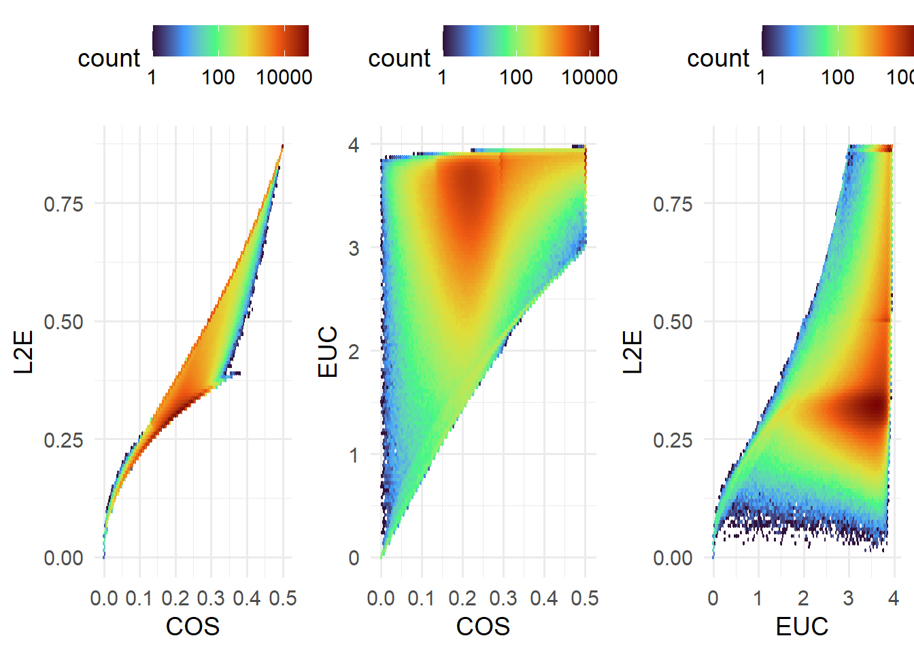
At this stage, pixels are assigned a preliminary gene label under the g column. As default, this is dependent on the nearest codebook match in cosine distance (column COSLAB in the dataframe).
knitr::kable( head(spotcalldf[,grepl('^g$|LAB$', colnames(spotcalldf))]), format = 'html', booktabs = TRUE )| g | COSLAB | EUCLAB | L2ELAB | BCOSLAB | BEUCLAB | BL2ELAB | |
|---|---|---|---|---|---|---|---|
| 15055 | BLANK-NEW-05 | 104 | 104 | 104 | 100 | 100 | 100 |
| 15056 | BLANK-NEW-05 | 104 | 104 | 104 | 55 | 55 | 55 |
| 15057 | MKI67 | 55 | 55 | 55 | 11 | 11 | 11 |
| 15058 | MKI67 | 55 | 55 | 55 | 11 | 11 | 11 |
| 15059 | MKI67 | 55 | 55 | 55 | 51 | 51 | 51 |
| 15060 | MKI67 | 55 | 55 | 55 | 51 | 51 | 51 |
3.5.3 Annotating blanks
Users are recommended to filter out pixels with large distance metrics: i.e. those we cannot confidently decode. These thresholds can be determined a priori, or determined empirically by finding the threshold that separates blanks from non-blank calls.
There are several ways to define “blanks” that are provided in masmr:
gBlank: Whether the name of the gene assigned to a given pixel has the word “blank” in it.bPossible: Whether the next closest gene label for selected distance metrics are possible.gbPossible: Whether the next closest gene label for the default distance metric (COS) are possible.consistentLabel: Whether the gene labels agree across distance metrics.
As default, gBlank, gbPossible, and consistentLabel tests are run. The number of tests failed is reported by scoreBlanks.
nBlankTestsFailed <- scoreBlanks( spotcalldf )
table(nBlankTestsFailed)## nBlankTestsFailed
## 0 1 2 3
## 2039428 616429 255396 2spotcalldf$BLANK <- nBlankTestsFailed >0Say we decide that “blanks” are those that fail even one test. We can then examine the range of distance metrics between blanks and non-blanks. In general, distance metrics should be larger for blanks.
ggplot( reshape2::melt(spotcalldf, measure.vars=c('COS', 'EUC', 'L2E')) ) +
geom_violin(aes(x=BLANK, y=value, colour=BLANK) ) +
geom_boxplot(aes(x=BLANK, y=value, colour=BLANK), fill='transparent', width=0.25 ) +
facet_wrap(~variable, scales='free') +
ylab('') +
theme_minimal(base_size=14) +
scale_colour_manual(values=c('TRUE' = 'red', 'FALSE' = 'black')) +
theme(legend.position = 'none')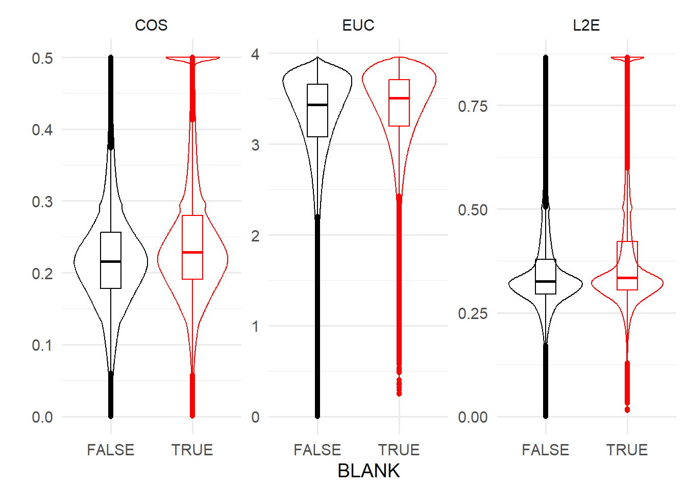
A reasonable distance threshold might be the average of medians. This can be easily obtained with the findThreshold or thresh_Quantile function (see documentation for details).
filtout <- rep(0, nrow(spotcalldf))
for( distanceMetric in c('COS', 'EUC', 'L2E') ){
thresh <- thresh_Quantile( spotcalldf[,distanceMetric], label = spotcalldf$BLANK, quantileFalse = 0.5, quantileTrue = 0.5 )
cat(paste0( '\n', distanceMetric, ' threshold: ', thresh ))
filtout <- filtout + spotcalldf[,distanceMetric] > thresh
}##
## COS threshold: 0.222254471692498
## EUC threshold: 3.30408867238758
## L2E threshold: 0.326703039218853table(filtout > 0)##
## FALSE TRUE
## 824288 20869673.5.4 Filtering and evaluating your choice of filter
How do we decide what is a good filter to apply to our data?
One idea is to use a priori knowledge of gene distributions in space. For instance, in our example dataset of an organoid, we expect dividing cells to be concentrated near the lumen. Accordingly, filtering should enrich lumenal MKI67 (a marker for cell division).
cowplot::plot_grid( plotlist = list(
ggplot( spotcalldf[filtout>0 & spotcalldf$g=='MKI67',] ) +
geom_hex(aes(x=WX, y=WY), bins=100) +
scale_fill_viridis_c(option='turbo', trans='log10') +
scale_y_reverse() +
theme_void( base_size = 14 ) +
coord_fixed() + ggtitle('Drop'),
ggplot( spotcalldf[filtout==0 & spotcalldf$g=='MKI67',] ) +
geom_hex(aes(x=WX, y=WY), bins=100) +
scale_fill_viridis_c(option='turbo', trans='log10') +
scale_y_reverse() +
theme_void( base_size = 14 ) +
coord_fixed() + ggtitle('Keep')
), nrow=1)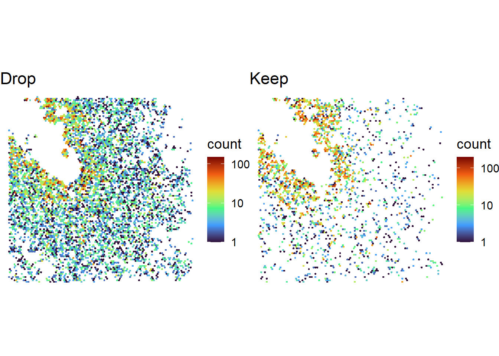
Another option is to consider how filtering changes quality control metrics: e.g. a good filter should generally increase correlation between count profiles and previously obtained FPKM data, should decrease the percentage of blanks relative to true genes, etc. We provide a filterDF function that reports how a given filter changes these QC metrics (should relevant files be specified in establishParams).
params$verbose <- TRUE ## To see output of filterDF, verbose is changed to True
spotcalldf <- filterDF(spotcalldf, filtout>0, returnTroubleShootPlots = T, plotWindowRadius = 5)##
## Applying filter: filtout > 0...## N pixels: 2911255 ( 100% ) --> 824288 ( 28.31% )## N blanks: 871827 ( 29.95% ) --> 207062 ( 25.12% )## LogFPKM Corr: 0.58239 --> 0.59519## LogN Probes Corr: 0.52337 --> 0.51121params$verbose <- FALSE ## Turn it back off if want to avoid messages entirely (warnings and errors will still be given)Perhaps the safest option – in that one that does not require a priori assumptions – is to perform some decoding by eye on a small FOV region, and ensure that one’s spotcalling pipeline returns results that agree with these manually obtained results. To attempt this, we provide a returnTroubleShootPlots parameter in filterDF. When set to TRUE (default FALSE), plots are returned showing pixel intensity images for each bit, overlaid with gene labels. [Do note that these plots are only available if users have kept their imMetrics environment, or have specified a list of images (imList).]
Plots show spots either BEFORE or AFTER filtering.
print( troubleshootPlots[['BEFORE']][[1]] )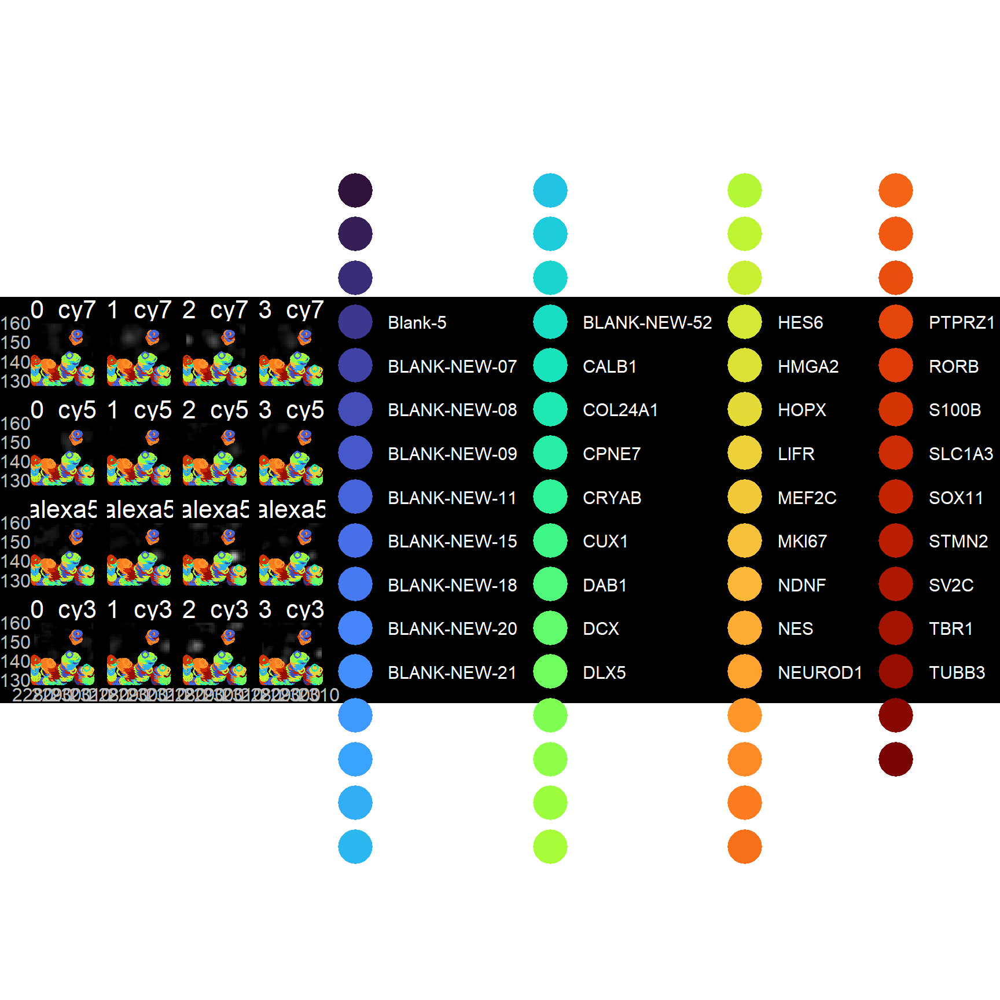
print( troubleshootPlots[['AFTER']][[1]] )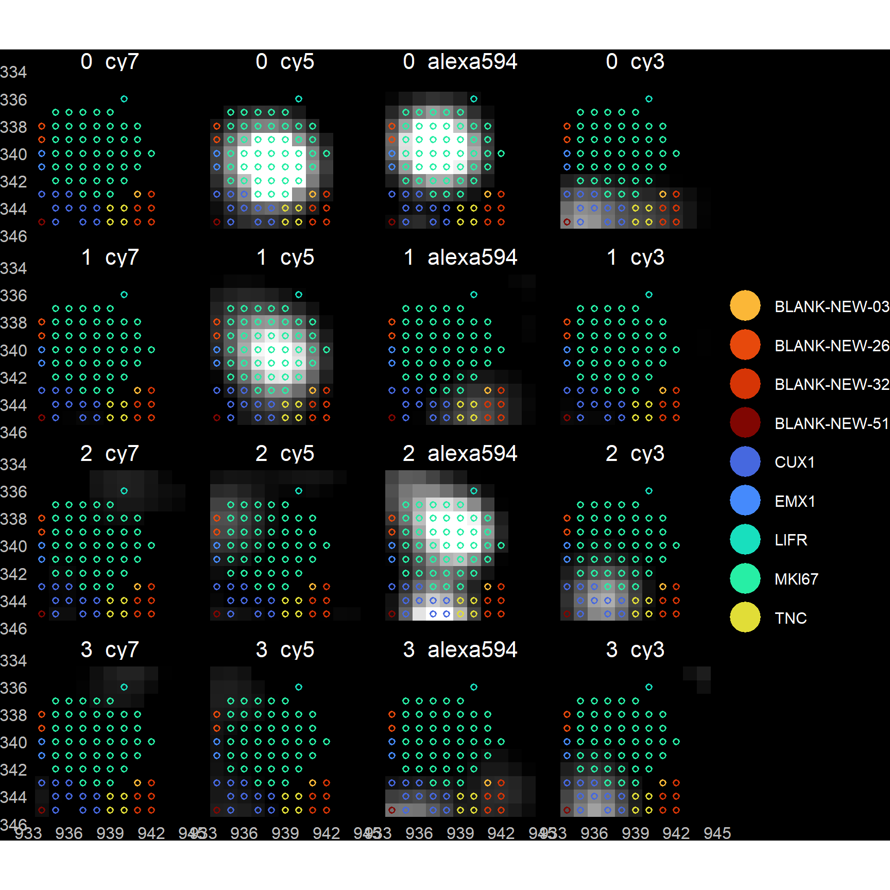
Under the hood, filterDF makes use of the spotcall_troubleshootPlots function to return plots, and parameters for spotcall_troubleshootPlots can be input into filterDF to modify the plots returned. Alternatively, users may simply use spotcall_troubleshootPlots directly (see documentation).
## An example
plotList <- spotcall_troubleshootPlots(
spotcalldf,
plotWindowRadius = 5,
decodeMetric = 'DECODE', #Instead of DECODE, users may pick other objects in imMetrics
chosenCoordinate = c(
939 + 340i, #Specifying a custom coordinate
sum(as.numeric(spotcalldf[1,c('WX', 'WY')]) * c(1, 1i)) #Specifying the first pixel in spotcalldf
)
)
for( i in 1:length(plotList) ){
p <- plotList[[i]]
print( p )
}Users are encouraged to optimise their image processing pipelines on one FOV, before applying the same pipelines to all other FOVs.
3.5.5 Binarising continuous values
Note that the current image vector contains continuous values. Users may wish to binarise values, such that superthreshold values are unambiguously assigned as ON, and subthreshold as OFF. To that end, we provide the bitsFromDecode function that searches for the optimal threshold that maximises accuracy of ON/OFF calls per bit. There are several ways to assay accuracy:
precision: True positives / (True positives + False positives)recall: True positives / (True positives + False negatives)f1(default): 2 * Precision * Recall / (Precision + Recall)fb: (1 + \(\beta^2\)) * Precision * Recall / (\(\beta^2\) * Precision + Recall)
After thresholding, we can also calculate Hamming Distance from codebook vectors, which is stored under the HD column.
spotcalldf <- bitsFromDecode(spotcalldf)
table(spotcalldf$HD)##
## 0 1 2 3 4 5 6 7 8 9
## 46125 288300 296934 124675 46694 15838 4772 851 94 5It is recommended to filter out pixels whose Hamming Distance to their assigned gene is >1.
spotcalldf <- filterDF(spotcalldf, spotcalldf$HD > 1)Binarisation is recommended if there is a clear cutoff in intensities between 0 vs 1 bits in the DECODE images. This assumption should be true in most cases, but may be violated if there are very different numbers of encoding probes for different genes: e.g. if there is a gene A that has 40 probes and a gene B with only 5 probes, ON for gene B will be dimmer than ON for gene A (and OFF for gene A may be brighter than OFF for gene B, depending on how thorough bleaching / washing was between imaging cycles). So a single intensity threshold separating ON vs OFF may not be appropriate here. In this scenario, users may wish to skip binarisation entirely.
3.5.6 Obtaining other QC metrics
Beyond image-codebook vector distances, we also provide other functions that users may find useful for performing further quality control checks. We provide several options for thresholding:
thresh_Otsu: Otsu thresholding. Useful for separating a bimodal distribution.thresh_Elbow: Identifies the elbow in a distribution. Useful for heavy tailed distributions.
thresh_Quantile: Finds the average between quantiles in group A vs B. As default, the chosen quantiles are the medians of A and B.
All thresholding functions are compatible with the findThreshold function.
set.seed(12345)
groups <- sample(c(F, T), 1E4, T, c(0.5, 0.5))
values <- rep(0, length(groups))
values[groups] <- rnorm(sum(groups), mean = 1, sd = 0.1)
values[!groups] <- rgamma(sum(!groups), shape = 1, scale = 0.5)
hist(values, breaks=1000, main = 'Thresholds: Otsu (red), Elbow (blue), Quantile (green)' );
abline(v=findThreshold(values, thresh_Otsu), col='red');
abline(v=findThreshold(values[values > median(values)], thresh_Elbow, rightElbow = T), col='blue');
abline(v=findThreshold(values, thresh_Quantile, labels = groups), col='green')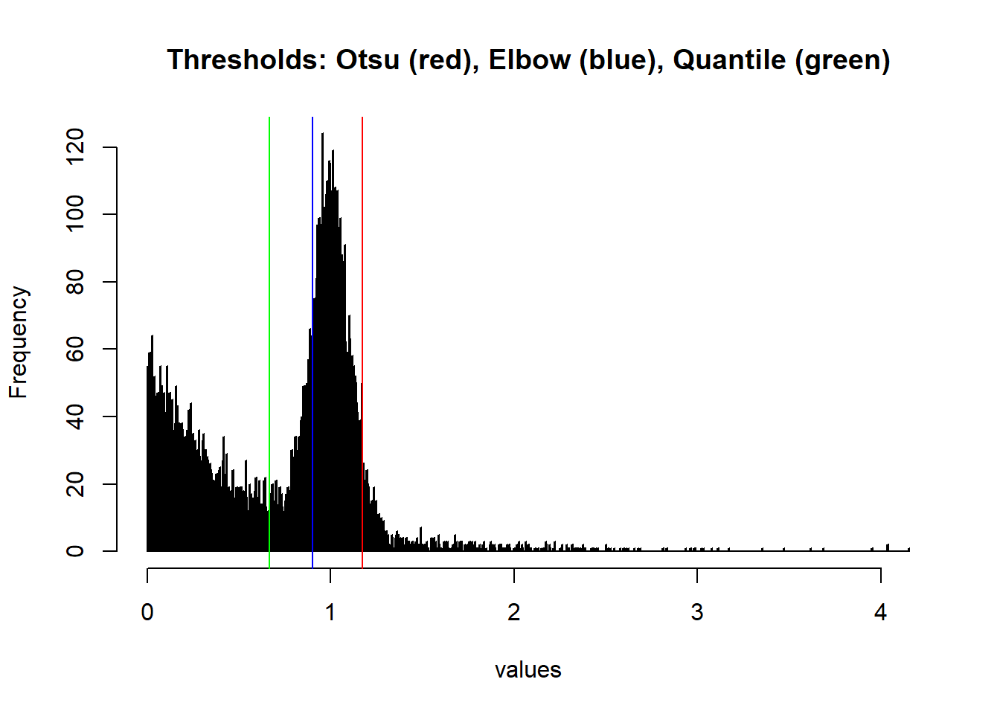
scoreDeltaF
This function calculates \(\Delta F / F_0\) metrics across image metrics. As default, all image metrics generated by getImageMetrics (and whose names are saved in params$imageMetrics) will be processed. [NB When \(F_0\) is 0, \(\Delta F / F_0\) is default set to the highest valid value for that column.]
Below, we show the \(\Delta F / F_0\) alone, but users should read the scoreDeltaF documentation for the full list of metrics returned (e.g. \(F_1\), \(F_0\) etc).
spotcalldf <- scoreDeltaF( spotcalldf )
knitr::kable( head( spotcalldf[,grepl('^DFF0_', colnames(spotcalldf))] ), format = 'html', booktabs = TRUE )| DFF0_ORIG | DFF0_NORM | DFF0_COARSE | DFF0_DECODE | DFF0_MASK | |
|---|---|---|---|---|---|
| 15058 | 1.2802097 | 1.347051e+01 | 0.9599303 | 8.064703 | 11 |
| 15248 | 2.1340655 | 6.973976e+04 | 1.6488084 | 44.437034 | 11 |
| 15481 | 0.6950561 | 1.981764e+00 | 0.3761400 | 7.115631 | 8 |
| 15489 | 0.2565917 | 2.393276e+00 | 0.4356834 | 35.583974 | 11 |
| 15557 | 0.1342583 | 1.395903e-01 | 0.2187945 | 12.710667 | 11 |
| 15562 | 0.6546181 | 3.173345e+00 | 0.3342836 | 15.044078 | 11 |
We expect low confidence spots to on average have low \(\Delta F / F_0\), i.e. their ON bits are less distinguishable from their OFF bits.
ggplot(spotcalldf[spotcalldf$F0_DECODE!=0,]) +
geom_violin(aes(x=BLANK, y=DFF0_DECODE, colour=BLANK) ) +
geom_boxplot(aes(x=BLANK, y=DFF0_DECODE, colour=BLANK), fill='transparent', width=0.25 ) +
scale_y_log10() +
theme_minimal(base_size=20) +
scale_colour_manual(values=c('TRUE' = 'red', 'FALSE' = 'black')) +
theme(legend.position = 'none')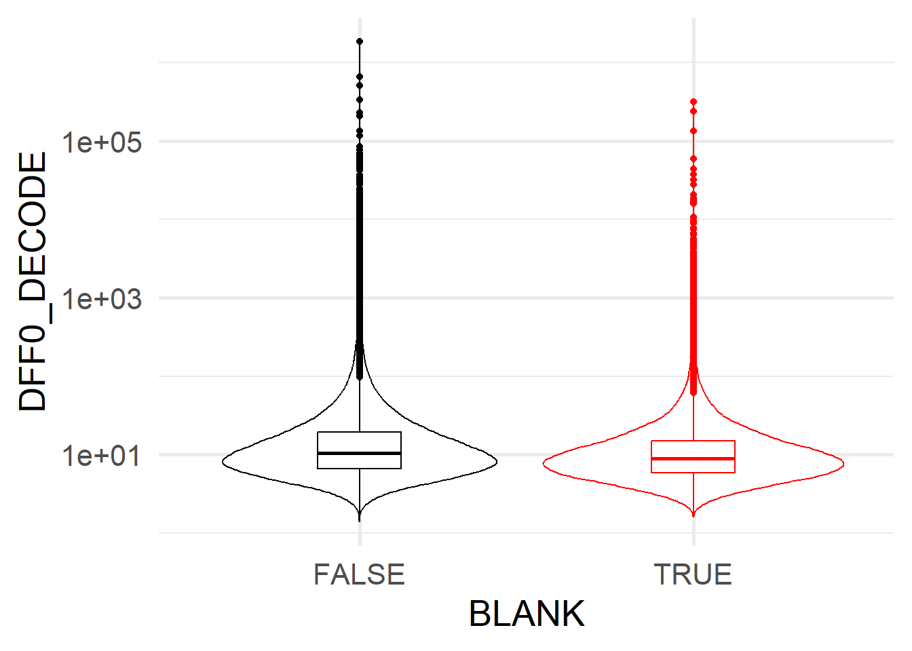
spatialIsAdjacent
The spatialIsAdjacent function searches in the immediate surroundings of a set of query coordinates. For instance, below, we ask if a given pixel is next to a blank. [Unsurprisingly, blanks will be reported as being next to blanks.]
isNextToBlank <- spatialIsAdjacent( spotcalldf, 'BLANK' )
by(isNextToBlank, spotcalldf$BLANK, table)## spotcalldf$BLANK: FALSE
##
## FALSE TRUE
## 240735 16688
## ------------------------------------------------------------
## spotcalldf$BLANK: TRUE
##
## TRUE
## 77002spotcalldf$NEXTTOBLANK <- isNextToBlankIn general, we are less confident about non-blank spots that are next to blanks, as evidenced by their higher codebook distances below.
ggplot( reshape2::melt( data.frame(spotcalldf)[!spotcalldf$BLANK, ], measure.vars=c('COS', 'EUC', 'L2E')) ) +
geom_violin(aes(x=NEXTTOBLANK, y=value, colour=NEXTTOBLANK) ) +
geom_boxplot(aes(x=NEXTTOBLANK, y=value, colour=NEXTTOBLANK), fill='transparent', width=0.25 ) +
facet_wrap(~variable, scales='free') +
ylab('') +
theme_minimal(base_size=14) +
scale_colour_manual(values=c('TRUE' = 'red', 'FALSE' = 'black')) +
theme(legend.position = 'none') +
ggtitle('Non-blank spots') + xlab('Is next to a blank')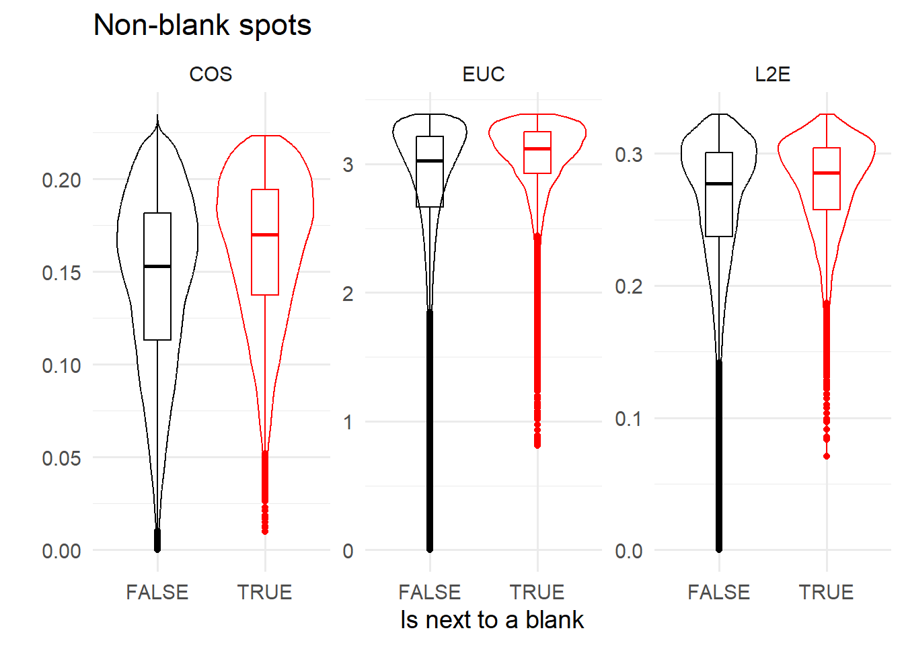
Users may thus wish to “trim” pixel clusters, by removing non-blanks that are next to blanks: this is beneficial for clustering (described later). [Obviously, blanks should not be subject to the same filtering.]
spotcalldf <- filterDF(spotcalldf, spotcalldf$NEXTTOBLANK & !spotcalldf$BLANK)spatialHNNDist
Another useful spatial metric is how far apart any two pixels with the same identity are from each other, here called “homotypic nearest neighbour (HNN) distance”. This can be calculated using spatialHNNDist.
HNNDist <- spatialHNNDist( spotcalldf )
spotcalldf$HNNDIST <- HNNDistIn general, blanks are less likely to be next to each other (possibly because of erroneous single pixel calls in noisy regions), while spots from the same gene tend to cluster - i.e. tend to have low HNN distances (below). Users typically do not have to perform thresholding on HNN distances given the later clustering step; though the distribution of distances can be helpful for determining minimum intracluster distances later on.
hnnDistBins <- factor(cut(spotcalldf$HNNDIST, breaks=c(0,1,2,3,4,5,Inf)))
ggplot( data.frame(spotcalldf, hnnDistBins) ) +
scale_fill_viridis_d(name = 'HNN distance range (pixels)', option='turbo') +
geom_bar(aes(x=BLANK, fill=hnnDistBins), position='fill' ) +
theme_minimal(base_size=14) +
theme(legend.position = 'right') + ylab('Proportion')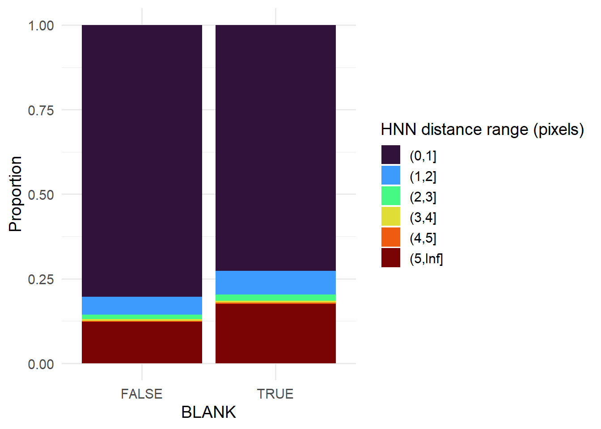
scoreClassifier
Finally, we have the scoreClassifier function. Under the hood, this function builds a classifier (logistic regression as default) to distinguish one class of pixels from another, using pixel-wise metrics in our dataframe. Users can specify covariates to include in the model; otherwise, all columns in the dataframe will be used.
Below is an example of predicting blanks from non-blanks. We exclude bit-specific columns (e.g. DECODE_01), covariates that are likely to highly correlate with others (e.g. F1_DECODE and DFF0_DECODE are likely to highly correlate), coordinate information, and any covariate that is equivalent to BLANK.
forExclusion <- c('Xm', 'Ym', 'fov', 'g', 'WX', 'WY', 'IDX', colnames(spotcalldf)[grepl('_\\d+$|^DFF0_|^F1_|CV_|LAB$', colnames(spotcalldf))])
probabilityBLANK <- scoreClassifier(spotcalldf, 'BLANK', variablesExcluded = forExclusion)
spotcalldf$PBLANK <- probabilityBLANKAccordingly the probability of being a blank is higher for blanks than non-blanks.
thresh <- thresh_Quantile(spotcalldf$PBLANK, spotcalldf$BLANK, quantileFalse = 0.5, quantileTrue = 0.25)
ggplot( spotcalldf ) +
geom_violin(aes(x=BLANK, y=PBLANK, colour=BLANK) ) +
geom_boxplot(aes(x=BLANK, y=PBLANK, colour=BLANK), fill='transparent', width=0.25 ) +
ylab('Probability of being a blank') +
theme_minimal(base_size=14) +
scale_colour_manual(values=c('TRUE' = 'red', 'FALSE' = 'black')) +
theme(legend.position = 'none') +
geom_hline(yintercept=thresh, linetype = 'dashed', colour='grey')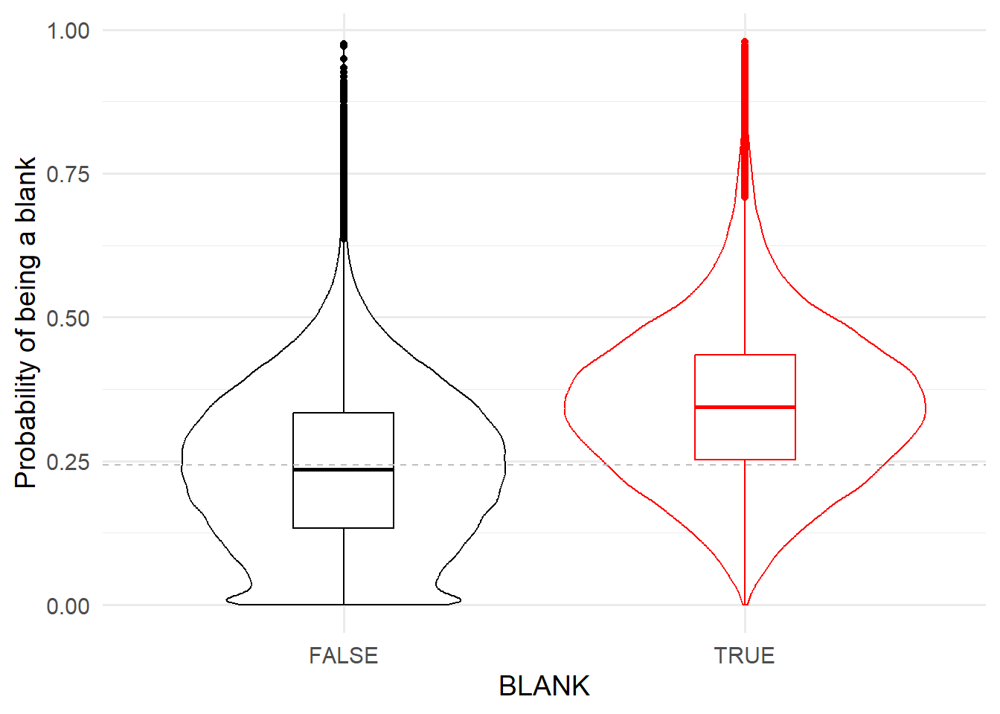
Thresholding and filtering can be performed using the classifier scores:
spotcalldf <- filterDF(spotcalldf, spotcalldf$PBLANK > thresh)3.5.7 Clustering
Having performed QC to focus on pixels whose identity we are confident in, the next step is to cluster adjacent pixels with the same identity into a single punctum. This is accomplished with the spatialClusterLeiden function. Here, we want clusters at least 3 pixels big, and with a maximum distance between pixels of 2 pixels.
clusterInfo <- spatialClusterLeiden( spotcalldf, minNeighbours = 3, maxInterSpotDistancePixels = 2)
spotcalldf[,colnames(clusterInfo)] <- clusterInfoUsers are recommended to visualise clusters across a small window. Note how specifying centroids only returns a single pixel coordinate per cluster.
## Specify window to plot
cxWindow <- c(1200, 1300, 1200, 1300)
## Specify what genes assigned which colours
## Manually:
# genePalette <- setNames(
# viridis::turbo(nrow(params$ordered_codebook)),
# rownames(params$ordered_codebook) )
## Using previously established palette (established during prepareCodebook):
genePalette <- params$genePalette
## Plot of labelled pixels vs centroids
cowplot::plot_grid( plotlist = list(
ggplot(
spotcalldf[
spotcalldf$WX > cxWindow[1]
& spotcalldf$WX < cxWindow[2]
& spotcalldf$WY > cxWindow[3]
& spotcalldf$WY < cxWindow[4], ]
) +
geom_text( aes(
x=WX, y=WY, label=g,
colour=factor(g, levels=rownames(params$ordered_codebook)))
) +
scale_colour_manual( values=genePalette ) +
theme_void(base_size=14) +
theme(legend.position = 'none',
plot.title = element_text(hjust=0.5)) +
scale_x_continuous( limits=c(cxWindow[1], cxWindow[2]) ) +
scale_y_reverse( limits=c(cxWindow[4], cxWindow[3]) ) +
ggtitle('All pixels'),
ggplot(
spotcalldf[
spotcalldf$CENTROID
& spotcalldf$WX > cxWindow[1]
& spotcalldf$WX < cxWindow[2]
& spotcalldf$WY > cxWindow[3]
& spotcalldf$WY < cxWindow[4], ]
) +
geom_text( aes(
x=WX, y=WY, label=g,
colour=factor(g, levels=rownames(params$ordered_codebook)))
) +
scale_colour_manual( values=genePalette ) +
theme_void(base_size=14) +
theme(legend.position = 'none',
plot.title = element_text(hjust=0.5)) +
scale_x_continuous( limits=c(cxWindow[1], cxWindow[2]) ) +
scale_y_reverse( limits=c(cxWindow[4], cxWindow[3]) ) +
ggtitle('Centroids only')
), nrow=1 )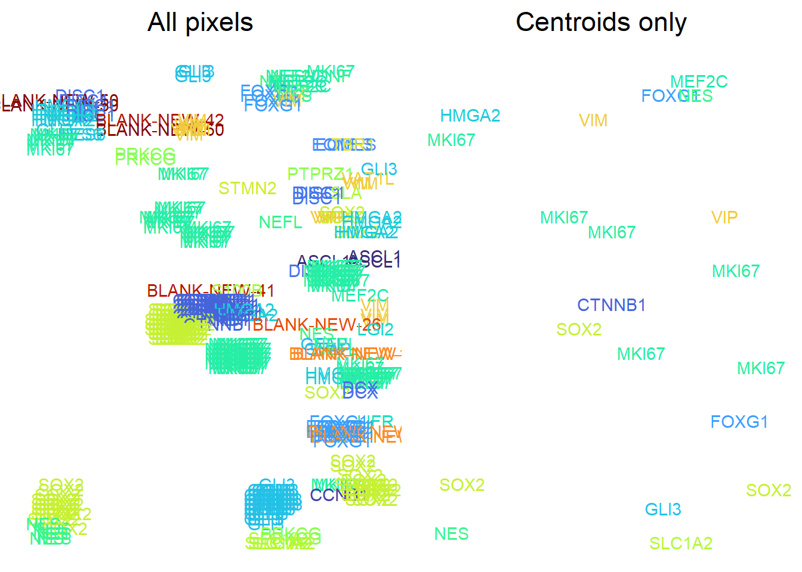
Depending on what the user wants, the non-centroid pixels can be filtered. Additionally, users may wish to examine cluster sizes to find an appropriate range of pixels per cluster.
maxClusterSize = 50
ggplot( spotcalldf[spotcalldf$CENTROID,] ) +
geom_histogram( aes(x=CLUSTER_SIZE, fill=BLANK), binwidth = 1) +
facet_wrap(~BLANK, ncol=1, scales='free_y', strip.position = 'right') +
theme_minimal(base_size=14) +
xlab('Cluster size') + ylab('N centroids') +
geom_vline(xintercept = maxClusterSize, col='grey', linetype='dashed') +
scale_fill_manual( values=c('FALSE' = 'black', 'TRUE' = 'red') )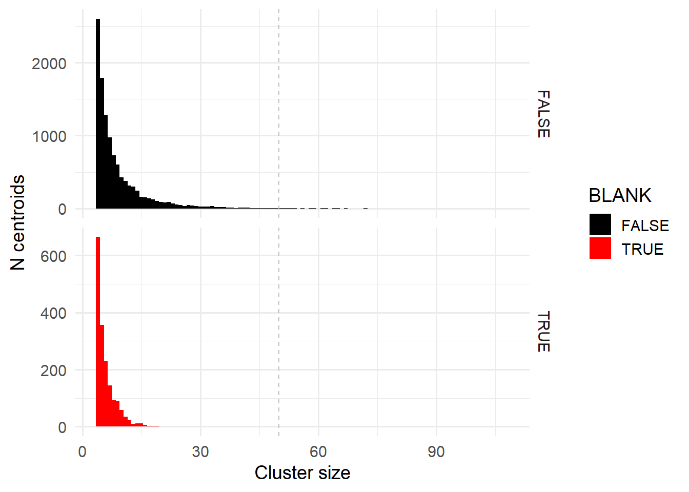
As before, filtering is accomplished with filterDF:
spotcalldf <- filterDF(spotcalldf, !(spotcalldf$CENTROID & spotcalldf$CLUSTER_SIZE < maxClusterSize) )3.6 Saving spot calls
If we are satisified with our quality control, the final step is to use the saveDF function to save the dataframe. The default output is a SPOTCALL_{ FOV Name }.csv.gz file; users that have set params$resumeMode to TRUE may wish to first check if this file exists before proceeding with image processing.
saveDF( spotcalldf )
file.exists( paste0(params$out_dir, 'SPOTCALL_', params$current_fov, '.csv.gz') )## [1] TRUEIndividual files are thereby generated for every FOV.